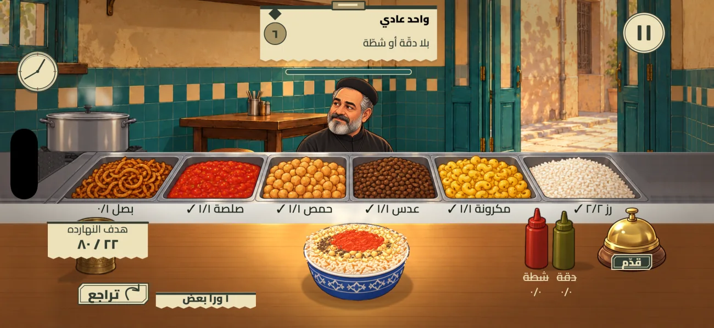
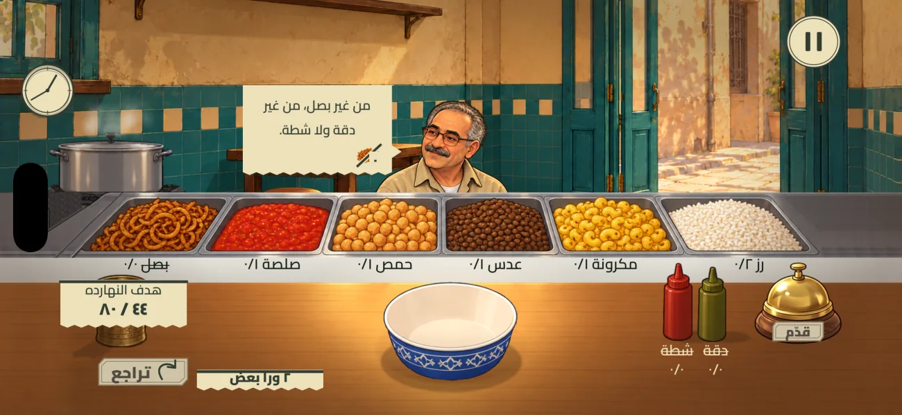
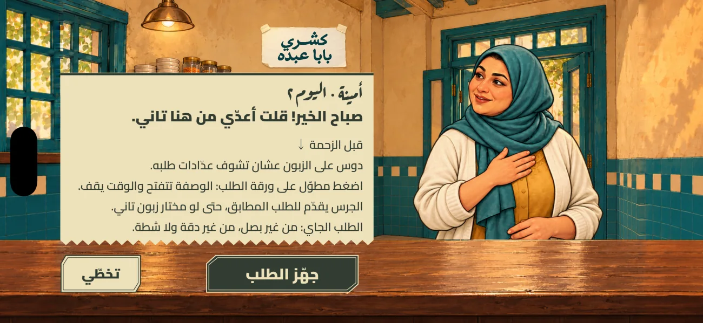

حسن
«من غير بصل، من غير دقّة ولا شطّة.»
لعبة طبخ مصرية
افتح محل كشري بابا عبده. حسن عايزه من غير بصل، وغيره عايز دقّة وشطّة. اسمع الطلب واعمل لكل واحد طبقه على مزاجه.
من أول معلقة رز لحدّ جرس التقديم.

رز، مكرونة، عدس، حمص، صلصة وبصل. بصّ على ورقة الطلب قبل ما تقدّم.

حسن عايزه من غير بصل. دوس مطوّل على ورقة الطلب عشان تقراها والوقت واقف.

حوش من فلوس الوردية واختار حاجة جديدة للمحل.

افتح المحل تاني يوم، وشوف أمينة راجعة تقولك إيه.

بعد ما تخلّص الأسبوع، افتح التدريب والعب من غير وقت. رصيد المحل يفضل زي ما هو.
أول أسبوع ليك في المحل، ودي شوية وشوش هتعرفها.
«من غير بصل، من غير دقّة ولا شطّة.»
«صباح الخير! قلت أعدّي من هنا تاني.»

قصة اللعبة وما فيها.
المقادير والخطوات وخطة الساعة، والدقة والشطة.
ملاحظات الإصدارحكاية سبعة أيام، و16 جارًا، ومحل تزيّنه، وطلبية يومية، وGame Center، وثمانية ملصقات.
الإطلاققصة تحول اللعبة من نموذج ثنائي الأبعاد ونموذج ثلاثي الأبعاد إلى لعبة مسطحة بـ SpriteKit.